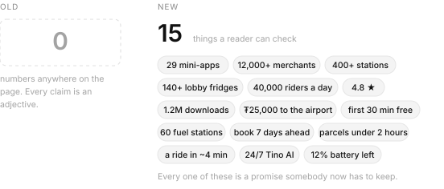
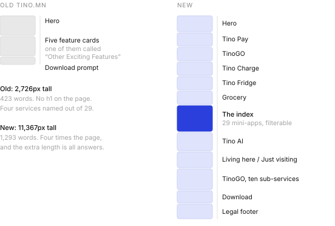

Fresh look for Tino.mn
2026
The old tino.mn described a superapp with twenty nine services and named four of them. The fifth card was called “Other Exciting Features”. Everything that follows came out of trying to fix that one card.1
What was there
A blue gradient hero with a phone floating in it, a row of five cards, and a download prompt.
Four hundred and twenty three words on the whole page. No h1 anywhere, so the
document started at a second level heading and search engines had nothing to hold onto.
The page was not ugly. That is what made it hard to argue about internally. It was competent and generic, and it could have been the landing page for any superapp in any city.
Adjectives into numbers
Here is the old opening line, and the one I wrote.
Everything you need in one app. Discover our comprehensive suite of services designed to simplify your daily life and enhance your digital experience.
One app for your whole city. Ride, pay, order, rent, book. Everything Ulaanbaatar runs on, in a single tap.
The old line has seventeen words in its second sentence and not one of them is a fact. Comprehensive, designed, simplify, enhance. You could paste it onto a dental practice.
My line names the city. That was the whole move. Tino is not a superapp in general, it is the thing Ulaanbaatar uses to get around, and a page that will not say the city name is a page hedging about who it is for.
I ran the same swap through every section. The old page made no numeric claim at all. Not one. Mine makes fifteen.

Every number on that page is a promise an operations team now has to keep. That is the cost of writing them down, and it is also the entire reason they work.
Twenty nine, not five
The old page listed four services and then gave up. Smart Fridge, Tino Charge, Tino Go, Grocery Shopping, and a fifth card headed “Other Exciting Features” whose body copy read a whole world of other exciting features waiting for you.
Twenty five services were sitting behind that sentence. Global Taxi. Designated driver. Event shuttles. eSIM. Bus. Car rental. Utility bills. Every one of them is somebody’s reason to download the app, and every one of them was invisible.
So I gave the new page an index. Twenty nine entries, filterable by transport, everyday, bills and money, travel and lifestyle, each linking to its own page with hours, coverage, pricing and a step guide. It is the least glamorous block on the page and I think it is the most useful.
Two readers, not one
The old page addressed one person, vaguely. I split the new one in two and said which is which.
Living here. Set it up once and use the whole city. Bank card, bus card, utilities, rent, deliveries, rides. One login, one activity feed, one support thread.
Just visiting. eSIM before you land, a fixed price airport ride, tours and ger camps, and the line that actually matters to a visitor, which is that it works with a foreign Visa or Mastercard with no local account and English throughout.
A tourist landing on the old page had no way to know whether any of it would work for them. That is a conversion problem dressed as a copy problem.
The part nobody wants to design
I wrote four numbered legal notes into the new footer. Which Tino entity provides which service. The payment service provider licence supervised by the Bank of Mongolia. That wallet balances sit in segregated accounts at licensed commercial banks, are not deposits, earn no interest and carry no deposit insurance. That TinoGO drivers are independent contractors, and where to take a complaint within thirty days.
None of that helps anyone download the app. I put it there because Tino moves other people’s money, and a company that moves your money should be legible about the terms before you hand it over, not after.2
Four times longer, on purpose
The old page was 2,726 pixels tall at desktop width. Mine is 11,367. Four times the page, and I did not spend the extra length on decoration.

Short pages are good when the reader already knows what they want. Nobody arrives at a superapp landing page knowing what a superapp is. Length here buys specificity, and specificity is what turns a visitor into a download.
- Both pages were live when I wrote this, so the counts here came from reading them rather than from a brief. Word counts, page heights and the number of claims were measured at 1440 pixels wide on the same day.
- Legal footers are usually written by lawyers and designed by nobody. Getting one that is readable is mostly a matter of arguing for the space, which is less fun than it sounds.